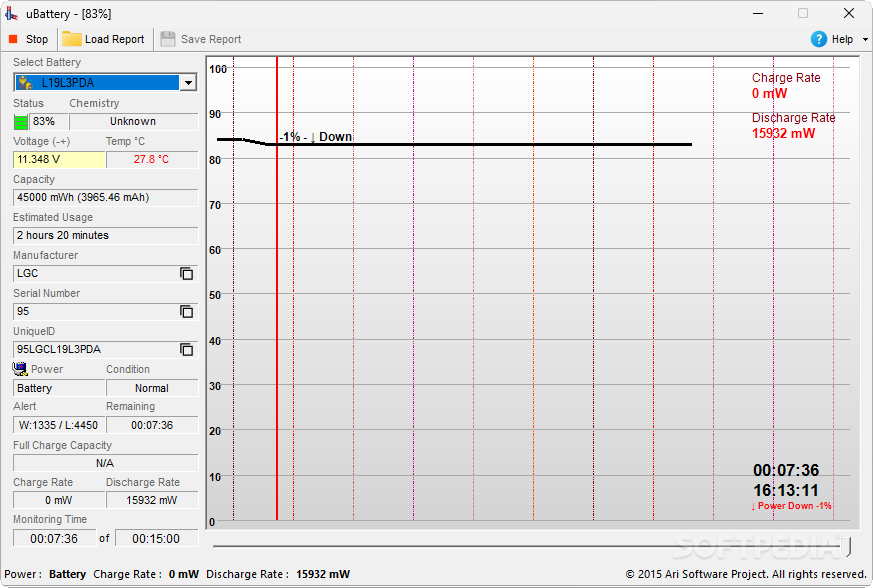

uBattery
 uBattery is a simple yet powerful battery monitoring tool for laptop users. Keep track of your battery's health, discharge rate, and other vital statistics to maximize your portable computing time and understand your battery's performance.
Key Features
- Real-time Battery Monitoring - Track your battery's discharge rate with a live graph that updates as you use your laptop, showing how different activities affect battery drain.
- Detailed Battery Information - View technical specifications including temperature, capacity, serial number, and chemistry to better understand your battery's condition.
- Report Generation - Save battery reports for later analysis, helping you diagnose issues or track battery health over time.
Frequently Asked Questions
Is uBattery free?
→ Yes, uBattery is 100% Free.
Does it show battery health?
→ Yes, uBattery displays your battery's current capacity compared to its design capacity, giving you insight into its overall health.
Can I monitor discharge rate?
→ Absolutely. The live graph shows exactly how quickly your battery is discharging and how different activities affect the rate.
Does it run in the system tray?
→ Currently uBattery runs as a desktop application, but future versions may include system tray functionality for easier monitoring.
|